Hydrogen (H): the most common element in the universe, on Earth and in living things, by number of atoms. It is also the smallest and the lightest atom.
Carbon (C): an element that forms an enormous variety of compounds. Carbon compounds are the ones that fill every key role in living things.
Nitrogen (N): the most common element in the Earth's atmosphere, and the fourth most common in living things. It is found in most of the functional molecules of the human body. Nitrogen is very common, but mostly as the element itself; nitrogen compounds are hard to come by, and they are necessary for life. They are made from elemental nitrogen by a number of biological and physical processes in nature, and in industry as well.
Oxygen (O): the most common element in living things, by mass. One of the most chemically active elements there is.
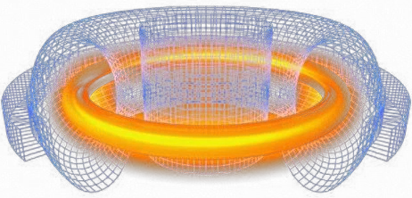
Nuclear fusion: a process in which several atoms join into one. Nuclear fusion as it happens in this game does not happen on Earth. It can take place only at the center of stars far larger than the sun, or in supernovae. Beyond that, what fusion produces depends not only on the atomic number of the reactants but also on their mass number, which can differ even between two atoms of the same atomic number, so it will not necessarily give the same result as in the game. Simpler fusion does happen in the sun. In the middle of the 20th century it was achieved artificially too, though not under control: that is the hydrogen bomb. Many attempts are being made at controlled fusion, and their success is expected to solve a good part of the problems of energy and of the environment.
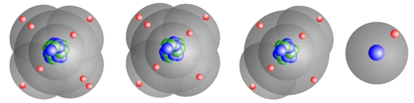
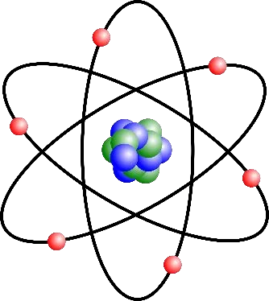
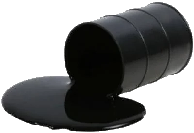
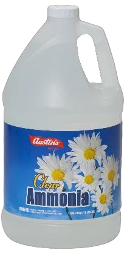
Alkanes (CnH2n+2): a family of simple carbon compounds built of carbon and hydrogen. Methane, ethane, propane and butane are alkanes. Petroleum is almost entirely a mixture of different alkanes. The alkanes are used as fuel and as raw material for making other things.
Ammonia (NH3): a simple nitrogen compound. It is the basis of most nitrogen compounds. At the beginning of the 20th century people learned to make ammonia industrially, which led to the making of fertilizers, and they in turn made the great growth of the population through that century possible.
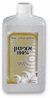
Acetone ((CH3)2CO): a carbon compound holding a single oxygen atom, much like an alcohol. It is used as a solvent and as raw material for other important compounds, among them explosives. Chaim Weizmann developed an efficient industrial process for making acetone; it helped the Entente to victory in the First World War and brought Weizmann wealth and standing. He used both to obtain the Balfour Declaration, which was a step toward the founding of the State of Israel.
Ethanol (C2H6O): the most common alcohol. It is the active ingredient of intoxicating drinks. Ethanol is poisonous but not deadly. Many people enjoy drinking because of the dulling effect ethanol has on the brain, which is called drunkenness. In many cultures, the Jewish one among them, some of these drinks also have a ceremonial part to play.
Ethane (C2H6): a secondary part of "natural gas". Its properties are close to those of methane.
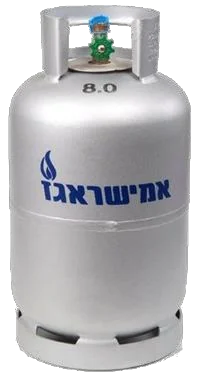
Butane (C4H10): together with propane it is the main part of "cooking gas". It is usually got from petroleum, by distillation. It is easier to move about than "natural gas", because it turns liquid at a fairly low pressure.
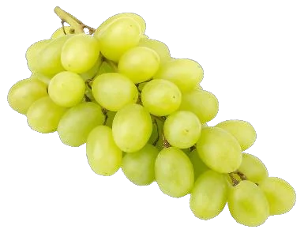
Glucose (C6H12O6): the simplest sugar. All the other sugars, the familiar white one among them, are built of glucose together with sugars like it, such as fructose. Glucose is the basic food of animals: the rest of what they eat is broken down, as a rule, into glucose first, and the body then takes it in and draws energy from it. Plants make glucose out of water and carbon dioxide with the energy of the sun, by photosynthesis, and the other things life is built of are made mostly out of glucose. For all its importance as food, eating glucose, and other simple sugars, directly and in quantity is not advisable, because they are digested quickly, which makes them hard for the body to regulate.
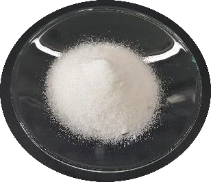
Glycine (C2H5NO2): the simplest amino acid. Nature has 20 amino acids, and what sets the others apart from glycine is that one of its central hydrogen atoms is replaced by another group of atoms. One end of an amino acid can be joined to the other end of another; that bond, in the forming of which a molecule of water is released, is called a peptide bond. A long run of amino acids joined that way is a protein. Almost every process in a living thing is carried out by proteins.
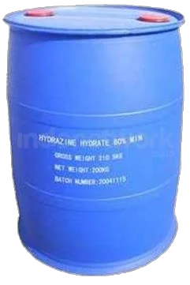
Hydrazine (N2H4): a nitrogen compound useful as fertilizer, as explosive and as rocket fuel. It is usually made from ammonia.
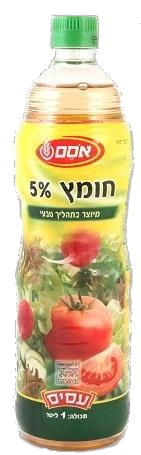
Acetic acid (CH3COOH): a fairly simple acid. It is the active ingredient of vinegar.
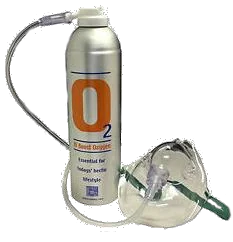
Oxygen (O2): the gas we breathe. Animals cannot live without it, though other living things have no need of it. It reacts readily with a great many substances, and so it cannot last, in conditions like those on Earth, unless something is making it. The early Earth had no oxygen, until plants began to make it out of carbon dioxide.
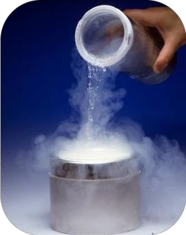
Nitrogen (N2): the main part of the air. Its Hebrew name, which means "the choker", is undeserved: the lack of oxygen chokes, but nitrogen does not choke at all. Nitrogen matters a great deal to life.
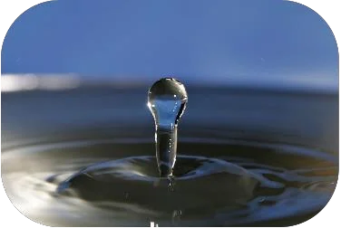
Water (H2O): the most common compound on Earth and in living things. Critical to life.
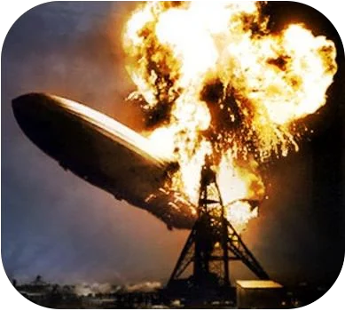
Hydrogen (H2): the lightest gas, and one of the few that are lighter than air. Highly flammable. Hydrogen is very common, but the hydrogen molecule hardly exists in nature on Earth, and it is made industrially by chemical processes. It serves mostly as raw material for other compounds, and sometimes as fuel. It was once used for aircraft lighter than air, a balloon or a zeppelin, and that use has almost entirely stopped because of the danger.
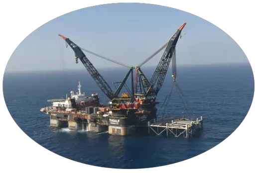
Methane (CH4): the main part of natural gas. It is used mostly as fuel, but also as raw material for other compounds. It counts as a fairly clean fuel: being light it is easy to clean of other substances, it burns almost completely, and what the burning leaves is mostly water and comparatively little carbon dioxide. On the other hand, getting it out of the ground may harm the environment, because, being a gas, some of it escapes into the atmosphere. Natural gas was found off the coast of Israel, and it is the only natural fuel the country has in any quantity.
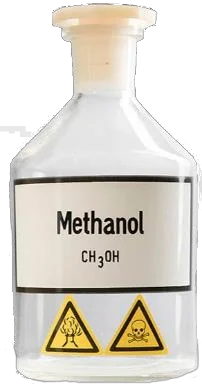
Methanol (CH4O): the simplest alcohol. Especially poisonous. Many people, alcoholics above all, are blinded or killed by drinking methanol in the belief that it is ethanol.
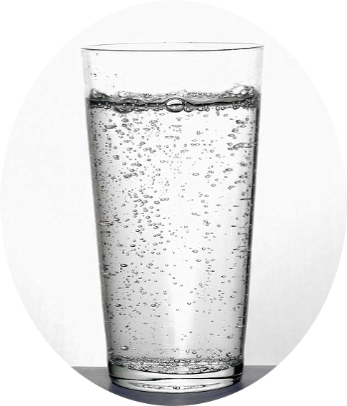
Carbon dioxide (CO2): the gas that is the raw material life is built from. Plants break it down, together with water, by photosynthesis, into oxygen, which they let out into the atmosphere, and carbon compounds, which they build themselves from. Animals make carbon dioxide out of the oxygen they breathe and the carbon compounds they eat, and so the carbon dioxide returns to the atmosphere. Because it dissolves so readily in water we use it to put the fizz in drinks such as soda. Carbon dioxide is also given off by the burning of fuel, which is one of the reasons its share of the atmosphere has been rising over the last decades. That rise strengthens the greenhouse effect, which makes the Earth take in more of the sun's energy and so raises its temperature. Without that effect the Earth would be far too cold for the great majority of the living things on it; but the rise in its temperature over the last decades may do ecological harm that will hurt us all. That is why efforts are being made in these decades to cut the giving off of carbon dioxide.
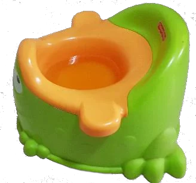
Propane (C3H8): together with butane it is the main part of "cooking gas". Its properties are close to those of butane.
Urea (CON2H4): one of the main things in urine. It can also be made industrially, and it has many uses, fertilizing among them. In many animals urea is made in the liver out of ammonia and other poisonous biological waste. It is not especially poisonous, and it leaves the body in the urine. Outside the body urea breaks back down into ammonia, which is what gives urine its smell.
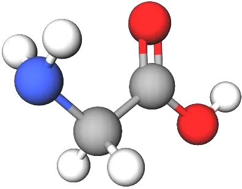